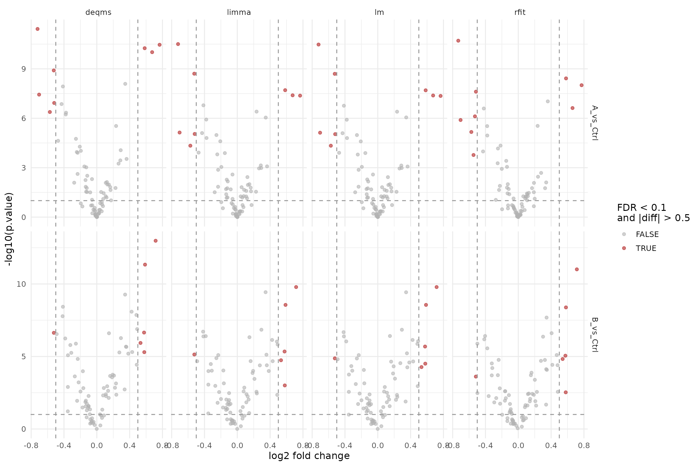
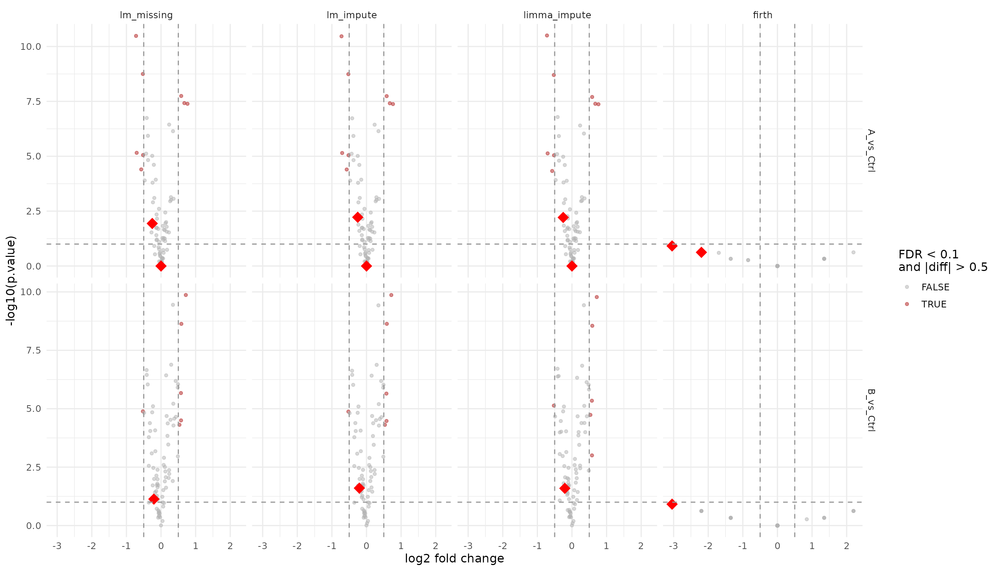
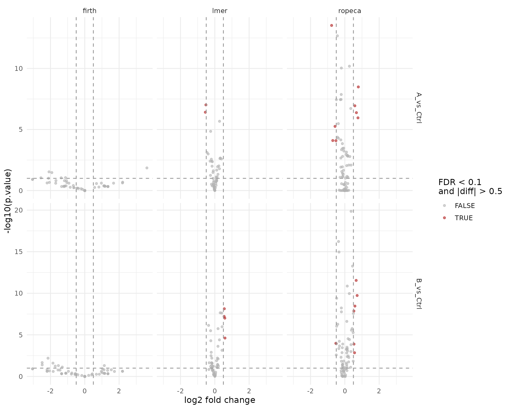

Contrast Facades with Parallel Designs
Witold E. Wolski
2026-06-23
Source:vignettes/ContrastFacades.Rmd
ContrastFacades.RmdPurpose
build_contrast_analysis() provides a common front-end
for several contrast backends:
-
lm— ordinary least-squares linear model fitted per protein, Wald contrasts. -
rfit— rank-based robust regression (Rfit::rfit); likelmbut resistant to outliers in the response. -
limma— linear model with empirical-Bayes moderated variance shrinkage across proteins. -
limma_impute—limmawith LOD imputation and borrowed per-protein variance for groups with no observations. -
limpa— vooma precision-weighted model on DPC-aggregated proteins (requiresAggregateLimpafor DPC-based aggregation with standard errors). -
lmer— linear mixed-effects model on nested peptide/precursor data, reporting protein-level contrasts. -
ropeca— peptide-level fold changes aggregated to protein via ROPECA median + beta-distribution p-values. -
lm_missing—lmmerged with group-mean substitution for proteinslmcannot estimate (deprecated; preferlm_impute). -
lm_impute—lmthat refits failed/singular proteins with LOD imputation and borrowed variance. -
deqms—limmaplus DEqMS count-dependent variance moderation using peptide counts per protein. -
firth— Firth bias-reduced logistic regression on presence/absence (missingness) of aggregated proteins. -
firth_nested— Firth logistic regression on peptide-level missingness, reporting protein-level contrasts.
All of them expose the same basic interface:
get_contrasts(), get_Plotter(), and
to_wide(). All examples below return protein-level
contrasts. The important difference is the required input level:
-
lm,rfit,limma,limma_impute,lm_missing,lm_impute, anddeqmsrequire aggregated protein-level data -
limparequires protein-level data fromAggregateLimpa(which provides standard errors and observation counts for vooma precision weighting) -
lmerandropecarequire lower-level measurements such as peptides nested within proteins, but still report protein-level contrasts -
firthcan be used with either aggregated protein-level data or nested peptide-level data and still reports protein-level contrasts
This vignette starts from one simulated peptide-level experiment, aggregates it to protein level, and then demonstrates both families of facades separately.
Simulate one experiment
options(prolfqua.vectorize = TRUE)
istar <- sim_lfq_data_peptide_config(Nprot = 80, seed = 42)
lfq_peptide <- LFQData$new(istar$data, istar$config)
lfq_peptide <- lfq_peptide$get_Transformer()$log2()$lfq
lfq_protein <- lfq_peptide$get_Aggregator()$aggregate()
lfq_peptide$hierarchy_keys()## [1] "protein_Id" "peptide_Id"
lfq_protein$hierarchy_keys()## [1] "protein_Id"
lfq_protein$nr_children_col()## [1] "nr_children_protein_Id"The aggregation step produces protein-level intensities while keeping
count metadata in the LFQData object. The DEqMS facade uses
lfq_protein$nr_children_col() directly, so no extra count
table has to be passed around.
Define contrasts
contrasts <- c(
"A_vs_Ctrl" = "group_A - group_Ctrl",
"B_vs_Ctrl" = "group_B - group_Ctrl"
)Two contrasts let us see how each backend handles multiple comparisons and how FDR correction propagates across contrasts.
Protein-input facades
The following facades require aggregated input, which in practice
means lfqdata$subject_id() must match
lfqdata$hierarchy_keys(). firth is included
here on purpose because it can be fitted directly on aggregated protein
input.
fa_lm <- build_contrast_analysis(
lfq_protein,
"~ group_",
contrasts,
method = "lm"
)
fa_rfit <- build_contrast_analysis(
lfq_protein,
"~ group_",
contrasts,
method = "rfit"
)
fa_limma <- build_contrast_analysis(
lfq_protein,
"~ group_",
contrasts,
method = "limma"
)
fa_limma_impute <- build_contrast_analysis(
lfq_protein,
"~ group_",
contrasts,
method = "limma_impute"
)
fa_lm_missing <- build_contrast_analysis(
lfq_protein,
"~ group_",
contrasts,
method = "lm_missing"
)
fa_deqms <- build_contrast_analysis(
lfq_protein,
"~ group_",
contrasts,
method = "deqms"
)
fa_lm_impute <- build_contrast_analysis(
lfq_protein,
"~ group_",
contrasts,
method = "lm_impute"
)
fa_firth_protein <- build_contrast_analysis(
lfq_protein,
"~ group_",
contrasts,
method = "firth"
)limpa facade (DPC-based aggregation)
The limpa facade is different from the other
protein-level facades: it requires its own aggregation step via
AggregateLimpa, which uses limpa’s Detection Probability
Curve (DPC) to aggregate peptides to proteins while producing
per-protein, per-sample standard errors. These SEs feed into a bivariate
vooma variance model for precision weighting.
lfq_limpa <- AggregateLimpa$new(lfq_peptide, "protein")$aggregate()
fa_limpa <- build_contrast_analysis(
lfq_limpa,
"~ group_",
contrasts,
method = "limpa"
)Because all protein-input facades share the same interface and report protein-level contrasts, their outputs can be combined directly.
# Proteins missing in the baseline lm facade (used to flag rescued proteins)
lm_missing_ids <- fa_lm$get_missing() |>
dplyr::select(protein_Id, contrast) |>
dplyr::mutate(rescued = TRUE)
results_limpa <- if (requireNamespace("limpa", quietly = TRUE)) {
fa_limpa$get_contrasts()
} else {
data.frame()
}
results_protein <- bind_rows(
fa_lm$get_contrasts(),
fa_rfit$get_contrasts(),
fa_limma$get_contrasts(),
fa_limma_impute$get_contrasts(),
fa_lm_missing$get_contrasts(),
fa_lm_impute$get_contrasts(),
fa_deqms$get_contrasts(),
fa_firth_protein$get_contrasts(),
results_limpa
) |>
dplyr::select(dplyr::any_of(c(
"facade", "modelName", "protein_Id", "contrast", "avgAbd", "diff", "FDR",
"statistic", "std.error", "df", "p.value", "conf.low", "conf.high",
"sigma"
))) |>
dplyr::left_join(lm_missing_ids, by = c("protein_Id", "contrast")) |>
dplyr::mutate(
rescued = dplyr::coalesce(rescued, FALSE),
significant = FDR < 0.1 & abs(diff) > 0.5
)
results_protein |>
dplyr::count(facade, name = "n_results")## # A tibble: 9 × 2
## facade n_results
## <chr> <int>
## 1 deqms 157
## 2 firth 160
## 3 limma 155
## 4 limma_impute 160
## 5 limpa 160
## 6 lm 157
## 7 lm_impute 160
## 8 lm_missing 160
## 9 rfit 157For facades that combine several underlying result types, such as
lm_missing, the modelName column still tells
you where individual rows came from.
results_protein |>
dplyr::count(facade, contrast, modelName, name = "n_results")## # A tibble: 24 × 4
## facade contrast modelName n_results
## <chr> <chr> <chr> <int>
## 1 deqms A_vs_Ctrl WaldTest_DEqMS 78
## 2 deqms B_vs_Ctrl WaldTest_DEqMS 79
## 3 firth A_vs_Ctrl WaldTestFirth 80
## 4 firth B_vs_Ctrl WaldTestFirth 80
## 5 limma A_vs_Ctrl limma 78
## 6 limma B_vs_Ctrl limma 77
## 7 limma_impute A_vs_Ctrl limma 77
## 8 limma_impute A_vs_Ctrl limma_imputed 3
## 9 limma_impute B_vs_Ctrl limma 77
## 10 limma_impute B_vs_Ctrl limma_imputed 3
## # ℹ 14 more rowsProtein-level volcano comparison
Standard facades
standard_facades <- c("lm", "rfit", "limma", "deqms")
results_standard <- results_protein |>
dplyr::filter(facade %in% standard_facades)
ggplot(results_standard, aes(x = diff, y = -log10(p.value), color = significant)) +
geom_point(alpha = 0.6, size = 1.5) +
facet_grid(contrast ~ facade, scales = "free_y") +
geom_vline(xintercept = c(-0.5, 0.5), linetype = "dashed", color = "grey60") +
geom_hline(yintercept = -log10(0.1), linetype = "dashed", color = "grey60") +
scale_color_manual(values = c(`TRUE` = "firebrick", `FALSE` = "grey70")) +
labs(x = "log2 fold change", y = "-log10(p.value)", color = "FDR < 0.1\nand |diff| > 0.5") +
theme_minimal(base_size = 12)
Volcano plots for the standard protein-level facades (lm, rfit, limma, deqms).
Imputation and missingness facades
Rescued proteins (missing in plain lm) are shown as
large red diamonds so they stand out clearly. This group includes the
LOD imputation facades (lm_missing, lm_impute,
limma_impute) and the firth logistic regression facade
which models missingness directly.
impute_facades <- c("lm_missing", "lm_impute", "limma_impute", "firth")
results_impute <- results_protein |>
dplyr::filter(facade %in% impute_facades) |>
dplyr::mutate(facade = factor(facade, levels = impute_facades))
ggplot(results_impute, aes(x = diff, y = -log10(p.value))) +
geom_point(data = dplyr::filter(results_impute, !rescued),
aes(color = significant), alpha = 0.5, size = 1.2) +
geom_point(data = dplyr::filter(results_impute, rescued),
color = "red", shape = 18, size = 5, alpha = 1) +
facet_grid(contrast ~ facade, scales = "free_y") +
geom_vline(xintercept = c(-0.5, 0.5), linetype = "dashed", color = "grey60") +
geom_hline(yintercept = -log10(0.1), linetype = "dashed", color = "grey60") +
scale_color_manual(values = c(`TRUE` = "firebrick", `FALSE` = "grey70")) +
labs(x = "log2 fold change", y = "-log10(p.value)", color = "FDR < 0.1\nand |diff| > 0.5") +
theme_minimal(base_size = 12)
Volcano plots for the imputation and missingness facades. Large red diamonds mark proteins rescued (missing in plain lm).
Looking at the strongest protein-level hits
results_protein |>
dplyr::group_by(facade, contrast) |>
dplyr::slice_min(order_by = p.value, n = 5, with_ties = FALSE) |>
dplyr::ungroup() |>
dplyr::select(facade, contrast, modelName, protein_Id, diff, p.value, FDR)## # A tibble: 90 × 7
## facade contrast modelName protein_Id diff p.value FDR
## <chr> <chr> <chr> <chr> <dbl> <dbl> <dbl>
## 1 deqms A_vs_Ctrl WaldTest_DEqMS Zci7Jw~7064 -0.722 3.79e-12 2.96e-10
## 2 deqms A_vs_Ctrl WaldTest_DEqMS 6TevMr~7550 0.765 3.46e-11 1.35e- 9
## 3 deqms A_vs_Ctrl WaldTest_DEqMS 4Y4DYT~0927 0.583 5.59e-11 1.45e- 9
## 4 deqms A_vs_Ctrl WaldTest_DEqMS 0CubNR~0890 0.674 9.73e-11 1.90e- 9
## 5 deqms A_vs_Ctrl WaldTest_DEqMS KVkccD~1805 -0.524 1.25e- 9 1.95e- 8
## 6 deqms B_vs_Ctrl WaldTest_DEqMS fylZqB~3883 0.717 1.05e-13 8.28e-12
## 7 deqms B_vs_Ctrl WaldTest_DEqMS XxJoJB~7286 0.587 4.63e-12 1.83e-10
## 8 deqms B_vs_Ctrl WaldTest_DEqMS f0Cvvj~6658 0.345 5.39e-10 1.42e- 8
## 9 deqms B_vs_Ctrl WaldTest_DEqMS TR3Ksv~1492 -0.413 3.73e- 9 7.37e- 8
## 10 deqms B_vs_Ctrl WaldTest_DEqMS 4Y4DYT~0927 0.424 8.16e- 9 1.29e- 7
## # ℹ 80 more rowsProteins that could not be estimated
Every facade has a get_missing() method that returns the
protein × contrast pairs present in the input data but absent from
get_contrasts(). This makes it easy to see which proteins
each method fails on and to compare coverage.
missing_limpa <- if (requireNamespace("limpa", quietly = TRUE)) {
fa_limpa$get_missing() |> dplyr::mutate(facade = "limpa")
} else {
data.frame()
}
missing_all <- dplyr::bind_rows(
fa_lm$get_missing() |> dplyr::mutate(facade = "lm"),
fa_limma$get_missing() |> dplyr::mutate(facade = "limma"),
fa_limma_impute$get_missing() |> dplyr::mutate(facade = "limma_impute"),
fa_lm_missing$get_missing() |> dplyr::mutate(facade = "lm_missing"),
fa_lm_impute$get_missing() |> dplyr::mutate(facade = "lm_impute"),
fa_deqms$get_missing() |> dplyr::mutate(facade = "deqms"),
fa_firth_protein$get_missing() |> dplyr::mutate(facade = "firth"),
missing_limpa
)
missing_all |>
dplyr::count(facade, contrast, name = "n_missing") |>
knitr::kable(caption = "Number of missing protein × contrast pairs per facade")| facade | contrast | n_missing |
|---|---|---|
| deqms | A_vs_Ctrl | 2 |
| deqms | B_vs_Ctrl | 1 |
| limma | A_vs_Ctrl | 2 |
| limma | B_vs_Ctrl | 3 |
| lm | A_vs_Ctrl | 2 |
| lm | B_vs_Ctrl | 1 |
Per-sample intensities of the missing proteins
missing_proteins <- unique(missing_all$protein_Id)
if (length(missing_proteins) > 0) {
lfq_protein$data_long() |>
dplyr::filter(protein_Id %in% missing_proteins) |>
dplyr::select(protein_Id, sampleName,
!!rlang::sym(lfq_protein$response())) |>
tidyr::pivot_wider(names_from = sampleName,
values_from = !!rlang::sym(lfq_protein$response())) |>
knitr::kable(digits = 2, caption = "Per-sample intensities of proteins that could not be estimated")
}| protein_Id | A_V1 | A_V2 | A_V3 | A_V4 | B_V1 | B_V2 | B_V3 | B_V4 | Ctrl_V1 | Ctrl_V2 | Ctrl_V3 | Ctrl_V4 |
|---|---|---|---|---|---|---|---|---|---|---|---|---|
| 8mS8sK~0150 | NA | NA | NA | NA | 3.85 | NA | NA | 3.76 | NA | NA | 3.37 | 3.55 |
| DTCi0N~0734 | NA | NA | NA | NA | NA | 4.37 | 4.35 | 4.28 | NA | 4.06 | 4.07 | 4.21 |
| OrL0ux~1369 | NA | NA | NA | 3.78 | NA | NA | NA | NA | 4.12 | 4.05 | NA | 3.98 |
The missing cells (NA) explain why these proteins cannot be estimated
— they lack observations in one or more groups. The
lm_missing facade fills in these gaps via group-mean
imputation, while lm_impute and limma_impute
re-fit after imputing individual values with the LOD and borrowing
covariance from successful fits. These should have fewer missing
proteins than plain lm or limma.
Estimates for the missing proteins from lm_missing and
lm_impute
For proteins that plain lm could not estimate, the
imputation-based facades can still produce contrast results. The table
below shows these rescued estimates side by side.
lm_missing_proteins <- fa_lm$get_missing()$protein_Id |> unique()
if (length(lm_missing_proteins) > 0) {
rescued <- results_protein |>
dplyr::filter(
protein_Id %in% lm_missing_proteins,
facade %in% c("lm_missing", "lm_impute", "limma_impute", "limpa")
) |>
dplyr::arrange(protein_Id, contrast, facade)
rescued |>
knitr::kable(
digits = 3,
caption = "Contrast estimates from lm_missing, lm_impute, and limma_impute for proteins that plain lm could not estimate"
)
} else {
cat("All proteins were estimable by plain lm — no rescued estimates to show.")
}| facade | modelName | protein_Id | contrast | avgAbd | diff | FDR | statistic | std.error | df | p.value | conf.low | conf.high | sigma | rescued | significant |
|---|---|---|---|---|---|---|---|---|---|---|---|---|---|---|---|
| limma_impute | limma_imputed | 8mS8sK~0150 | A_vs_Ctrl | 3.776 | 0.000 | 1.000 | 0.000 | 0.063 | 4.468 | 1.000 | -0.167 | 0.167 | 0.089 | TRUE | FALSE |
| limpa | limpa | 8mS8sK~0150 | A_vs_Ctrl | 2.798 | -0.615 | 0.226 | -1.435 | 0.429 | 30.965 | 0.161 | -1.489 | 0.259 | 0.965 | TRUE | FALSE |
| lm_impute | WaldTest_moderated_imputed | 8mS8sK~0150 | A_vs_Ctrl | 3.776 | 0.000 | 1.000 | 0.000 | 0.065 | 4.310 | 1.000 | -0.234 | 0.234 | 0.087 | TRUE | FALSE |
| lm_missing | groupAverage | 8mS8sK~0150 | A_vs_Ctrl | 3.697 | 0.000 | 1.000 | 0.000 | 0.102 | 2.000 | 1.000 | -0.437 | 0.437 | 0.102 | TRUE | FALSE |
| limma_impute | limma_imputed | 8mS8sK~0150 | B_vs_Ctrl | 3.784 | 0.018 | 0.803 | 0.279 | 0.063 | 4.468 | 0.792 | -0.150 | 0.185 | 0.089 | FALSE | FALSE |
| limpa | limpa | 8mS8sK~0150 | B_vs_Ctrl | 3.245 | 0.279 | 0.578 | 0.662 | 0.422 | 30.965 | 0.513 | -0.581 | 1.140 | 0.965 | FALSE | FALSE |
| lm_impute | WaldTest_moderated_imputed | 8mS8sK~0150 | B_vs_Ctrl | 3.784 | 0.018 | 0.798 | 0.286 | 0.065 | 4.310 | 0.788 | -0.217 | 0.252 | 0.087 | FALSE | FALSE |
| lm_missing | WaldTest_moderated | 8mS8sK~0150 | B_vs_Ctrl | 3.632 | 0.339 | 0.020 | 3.690 | 0.102 | 5.377 | 0.012 | 0.108 | 0.570 | 0.092 | FALSE | FALSE |
| limma_impute | limma_imputed | DTCi0N~0734 | A_vs_Ctrl | 3.902 | -0.253 | 0.017 | -3.996 | 0.063 | 6.468 | 0.006 | -0.405 | -0.101 | 0.090 | TRUE | FALSE |
| limpa | limpa | DTCi0N~0734 | A_vs_Ctrl | 3.550 | -0.982 | 0.020 | -2.714 | 0.362 | 30.965 | 0.011 | -1.719 | -0.244 | 0.991 | TRUE | TRUE |
| lm_impute | WaldTest_moderated_imputed | DTCi0N~0734 | A_vs_Ctrl | 3.902 | -0.253 | 0.017 | -4.057 | 0.065 | 6.310 | 0.006 | -0.467 | -0.040 | 0.088 | TRUE | FALSE |
| lm_missing | groupAverage | DTCi0N~0734 | A_vs_Ctrl | 3.902 | -0.253 | 0.032 | -4.417 | 0.057 | 4.000 | 0.012 | -0.412 | -0.094 | 0.070 | TRUE | FALSE |
| limma_impute | limma_imputed | DTCi0N~0734 | B_vs_Ctrl | 4.112 | 0.166 | 0.051 | 2.626 | 0.063 | 6.468 | 0.037 | 0.014 | 0.319 | 0.090 | FALSE | FALSE |
| limpa | limpa | DTCi0N~0734 | B_vs_Ctrl | 4.145 | 0.208 | 0.619 | 0.581 | 0.358 | 30.965 | 0.565 | -0.522 | 0.939 | 0.991 | FALSE | FALSE |
| lm_impute | WaldTest_moderated_imputed | DTCi0N~0734 | B_vs_Ctrl | 4.112 | 0.166 | 0.049 | 2.665 | 0.065 | 6.310 | 0.035 | -0.047 | 0.380 | 0.088 | FALSE | FALSE |
| lm_missing | WaldTest_moderated | DTCi0N~0734 | B_vs_Ctrl | 4.224 | 0.222 | 0.016 | 3.499 | 0.057 | 7.377 | 0.009 | 0.040 | 0.403 | 0.078 | FALSE | FALSE |
| limma_impute | limma_imputed | OrL0ux~1369 | A_vs_Ctrl | 3.879 | -0.207 | 0.050 | -3.293 | 0.063 | 4.468 | 0.026 | -0.374 | -0.039 | 0.089 | FALSE | FALSE |
| limpa | limpa | OrL0ux~1369 | A_vs_Ctrl | 3.497 | -0.881 | 0.025 | -2.630 | 0.335 | 30.965 | 0.013 | -1.563 | -0.198 | 0.960 | FALSE | TRUE |
| lm_impute | WaldTest_moderated_imputed | OrL0ux~1369 | A_vs_Ctrl | 3.879 | -0.207 | 0.049 | -3.369 | 0.065 | 4.310 | 0.025 | -0.441 | 0.028 | 0.087 | FALSE | FALSE |
| lm_missing | WaldTest_moderated | OrL0ux~1369 | A_vs_Ctrl | 3.913 | -0.276 | 0.055 | -2.951 | 0.084 | 5.340 | 0.029 | -0.480 | -0.072 | 0.081 | FALSE | FALSE |
| limma_impute | limma_imputed | OrL0ux~1369 | B_vs_Ctrl | 3.879 | -0.207 | 0.038 | -3.293 | 0.063 | 4.468 | 0.026 | -0.374 | -0.039 | 0.089 | TRUE | FALSE |
| limpa | limpa | OrL0ux~1369 | B_vs_Ctrl | 3.297 | -1.281 | 0.006 | -3.200 | 0.400 | 30.965 | 0.003 | -2.097 | -0.464 | 0.960 | TRUE | TRUE |
| lm_impute | WaldTest_moderated_imputed | OrL0ux~1369 | B_vs_Ctrl | 3.879 | -0.207 | 0.036 | -3.369 | 0.065 | 4.310 | 0.025 | -0.441 | 0.028 | 0.087 | TRUE | FALSE |
| lm_missing | groupAverage | OrL0ux~1369 | B_vs_Ctrl | 3.879 | -0.207 | 0.094 | -3.473 | 0.060 | 2.000 | 0.074 | -0.463 | 0.049 | 0.073 | TRUE | FALSE |
Peptide-input facades
The peptide-input facades take peptide/precursor-level
LFQData and return protein-level contrasts. They are
defined in R/ContrastsChildToParentFacades.R and use the
*_nested method keys: lmer_nested,
ropeca_nested, firth_nested, and
limpa_nested. firth_nested is the
peptide-input counterpart of the protein-input firth shown
above.
fa_lmer <- build_contrast_analysis(
lfq_peptide,
"~ group_ + (1 | peptide_Id) + (1 | sampleName)",
contrasts,
method = "lmer_nested"
)
fa_ropeca <- build_contrast_analysis(
lfq_peptide,
"~ group_",
contrasts,
method = "ropeca_nested"
)
fa_firth_peptide <- build_contrast_analysis(
lfq_peptide,
"~ group_",
contrasts,
method = "firth_nested"
)ropeca_nested aggregates peptide evidence back to
proteins, whereas lmer_nested models the nested peptide
structure directly before reporting protein-level contrasts.
firth_nested also reports protein-level contrasts: proteins
with exactly one peptide are fitted without an added peptide term, while
proteins with multiple peptides are fitted with the lowest hierarchy key
added internally.
results_peptide <- bind_rows(
fa_lmer$get_contrasts(),
fa_ropeca$get_contrasts(),
fa_firth_peptide$get_contrasts()
) |>
dplyr::select(dplyr::any_of(c(
"facade", "modelName", "protein_Id", "contrast", "avgAbd", "diff", "FDR",
"statistic", "std.error", "df", "p.value", "conf.low", "conf.high",
"sigma"
))) |>
dplyr::mutate(
significant = FDR < 0.1 & abs(diff) > 0.5
)
results_peptide |>
dplyr::count(facade, name = "n_results")## # A tibble: 3 × 2
## facade n_results
## <chr> <int>
## 1 firth_nested 160
## 2 lmer_nested 102
## 3 ropeca_nested 157
ggplot(results_peptide, aes(x = diff, y = -log10(p.value), color = significant)) +
geom_point(alpha = 0.6, size = 1.2) +
facet_grid(contrast ~ facade, scales = "free_y") +
geom_vline(xintercept = c(-0.5, 0.5), linetype = "dashed", color = "grey60") +
geom_hline(yintercept = -log10(0.1), linetype = "dashed", color = "grey60") +
scale_color_manual(values = c(`TRUE` = "firebrick", `FALSE` = "grey70")) +
labs(
x = "log2 fold change",
y = "-log10(p.value)",
color = "FDR < 0.1\nand |diff| > 0.5"
) +
theme_minimal(base_size = 12)
Volcano plots for the peptide-level facades. Rows are contrasts, columns are backends.
Remarks
The facades make it easy to benchmark alternative contrast backends without rewriting the analysis pipeline:
- the protein-level facades now enforce aggregation before modelling
- the
limpafacade uses its own DPC-based aggregation (AggregateLimpa) which produces standard errors propagated into vooma precision weights - the peptide-level facades now explicitly require lower-level hierarchy below the analysis subject
- the shared facade API still makes it straightforward to compare methods once the data level is chosen consistently
The results are comparable at the API level, but the comparison is only meaningful when methods using the same biological unit are plotted together.
Session Info
## R version 4.5.2 (2025-10-31)
## Platform: x86_64-pc-linux-gnu
## Running under: Ubuntu 24.04.4 LTS
##
## Matrix products: default
## BLAS: /usr/lib/x86_64-linux-gnu/openblas-pthread/libblas.so.3
## LAPACK: /usr/lib/x86_64-linux-gnu/openblas-pthread/libopenblasp-r0.3.26.so; LAPACK version 3.12.0
##
## locale:
## [1] LC_CTYPE=C.UTF-8 LC_NUMERIC=C LC_TIME=C.UTF-8
## [4] LC_COLLATE=C.UTF-8 LC_MONETARY=C.UTF-8 LC_MESSAGES=C.UTF-8
## [7] LC_PAPER=C.UTF-8 LC_NAME=C LC_ADDRESS=C
## [10] LC_TELEPHONE=C LC_MEASUREMENT=C.UTF-8 LC_IDENTIFICATION=C
##
## time zone: UTC
## tzcode source: system (glibc)
##
## attached base packages:
## [1] stats graphics grDevices utils datasets methods base
##
## other attached packages:
## [1] ggplot2_4.0.3 dplyr_1.2.1 prolfqua_1.6.3
##
## loaded via a namespace (and not attached):
## [1] Rdpack_2.6.6 gridExtra_2.3 rlang_1.2.0
## [4] magrittr_2.0.5 clue_0.3-68 GetoptLong_1.1.1
## [7] otel_0.2.0 matrixStats_1.5.0 compiler_4.5.2
## [10] mgcv_1.9-3 png_0.1-9 systemfonts_1.3.2
## [13] vctrs_0.7.3 pkgconfig_2.0.3 shape_1.4.6.1
## [16] crayon_1.5.3 fastmap_1.2.0 backports_1.5.1
## [19] labeling_0.4.3 utf8_1.2.6 rmarkdown_2.31
## [22] nloptr_2.2.1 ragg_1.5.2 UpSetR_1.4.1
## [25] purrr_1.2.2 xfun_0.59 glmnet_5.0
## [28] jomo_2.7-6 logistf_1.26.1 cachem_1.1.0
## [31] jsonlite_2.0.0 progress_1.2.3 pan_1.9
## [34] Rfit_0.27.0 prettyunits_1.2.0 broom_1.0.13
## [37] parallel_4.5.2 cluster_2.1.8.1 R6_2.6.1
## [40] bslib_0.11.0 stringi_1.8.7 RColorBrewer_1.1-3
## [43] limma_3.66.0 boot_1.3-32 rpart_4.1.24
## [46] numDeriv_2016.8-1.1 jquerylib_0.1.4 Rcpp_1.1.1-1.1
## [49] iterators_1.0.14 knitr_1.51 IRanges_2.44.0
## [52] Matrix_1.7-4 splines_4.5.2 nnet_7.3-20
## [55] tidyselect_1.2.1 yaml_2.3.12 doParallel_1.0.17
## [58] codetools_0.2-20 lmerTest_3.2-1 lattice_0.22-7
## [61] tibble_3.3.1 plyr_1.8.9 withr_3.0.3
## [64] S7_0.2.2 evaluate_1.0.5 desc_1.4.3
## [67] survival_3.8-3 circlize_0.4.18 pillar_1.11.1
## [70] mice_3.19.0 foreach_1.5.2 stats4_4.5.2
## [73] reformulas_0.4.4 plotly_4.12.0 generics_0.1.4
## [76] hms_1.1.4 S4Vectors_0.48.1 scales_1.4.0
## [79] minqa_1.2.8 glue_1.8.1 lazyeval_0.2.3
## [82] tools_4.5.2 data.table_1.18.4 lme4_2.0-1
## [85] forcats_1.0.1 fs_2.1.0 grid_4.5.2
## [88] limpa_1.2.5 tidyr_1.3.2 rbibutils_2.4.1
## [91] colorspace_2.1-2 nlme_3.1-168 formula.tools_1.7.1
## [94] cli_3.6.6 textshaping_1.0.5 viridisLite_0.4.3
## [97] ComplexHeatmap_2.26.1 gtable_0.3.6 sass_0.4.10
## [100] digest_0.6.39 operator.tools_1.6.3.1 BiocGenerics_0.56.0
## [103] ggrepel_0.9.8 rjson_0.2.23 htmlwidgets_1.6.4
## [106] farver_2.1.2 htmltools_0.5.9 pkgdown_2.2.0
## [109] lifecycle_1.0.5 httr_1.4.8 GlobalOptions_0.1.4
## [112] mitml_0.4-5 statmod_1.5.2 MASS_7.3-65